The State of Drupal DevOps
Drupalcon Austin
Kevin Bridges | @cyberswat
Director of Technology | @newmediadenver
#cyberswat
- The name does not mean what you think it does. I'm not going to change that.
- I'm not a Drupal developer or a DevOps engineer.
- I'm an Open Source Technologist.
- Director of Technology @newmediadenver
- Worked on key Drupal projects: popsci.com, examiner.com, top secret
- Worked for some neat companies: pingV, Bonnier Corporation, Clarity Digital, Acquia
- Served as Coder Track Chair and DevOps Track Chair for Drupalcons.
- Each project lead more into DevOps and further from Open Source.
- I'm on my way back to Open Source and bringing DevOps with me.
https://drupal.org/project/devops_survey
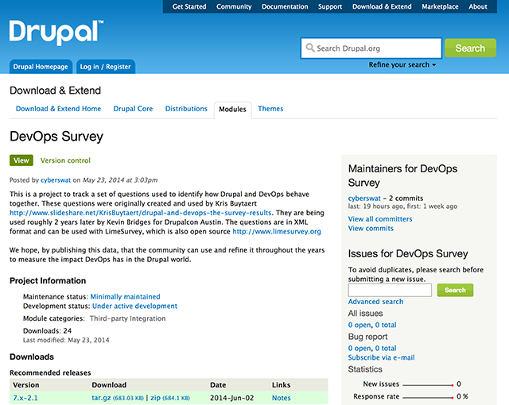https://github.com/newmediadenver/presentations
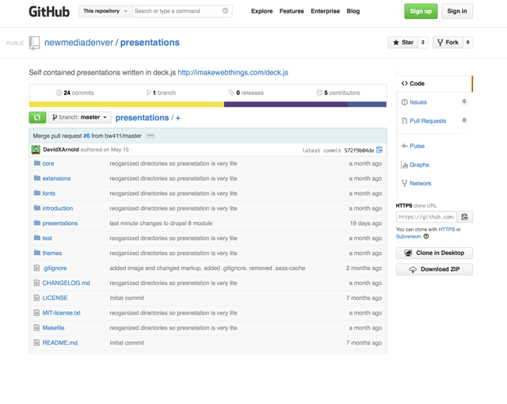Room: 10B - Blink Reaction | 3rd floor
Time slot: Thursday · 10:45-11:45
What is DevOps?
survey says ...
Let's clear this up from the people that know!
survey says ...
WTF was that?
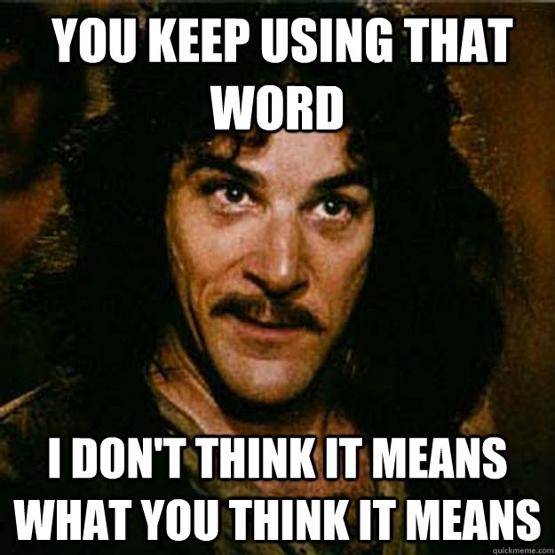
So why are we here?
Because We All Need Virtualized Dev Environments!
Let's try that again.
So why are we here?
Culture
Automation
Measurement
Sharing
Gorilla attraction forms silos.
Open Source changes silos.
So why a survey?
Who Are You?

Consistent growth in site management and site building.
Decrease in clients self-hosting sites.
Who Are You?
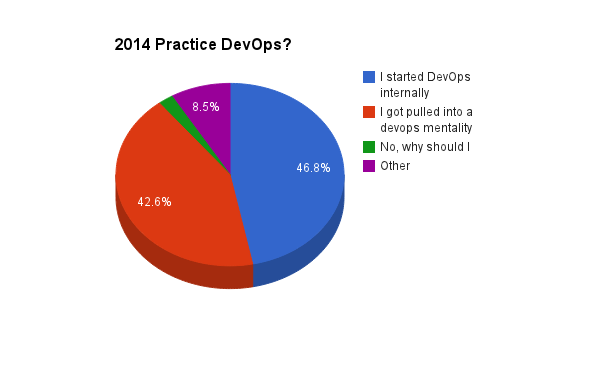
The number of people pulled into DevOps is on par with the number of people that introduce DevOps
According to the Drupal community we no longer need to explain "Why DevOps"
About Your Site?
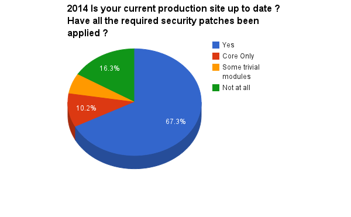
87% of respondents are subscribed to Drupal Security News.
The percentage of sites that are up to date for core only decreased by 13%.
The percentage of sites that are up to date for both core and contrib have increased 8%.
The percentage of sites that are not up to date at all has increased by 4%.
Overall, we seem to be having a difficult time keeping up.
About Your Site Development?
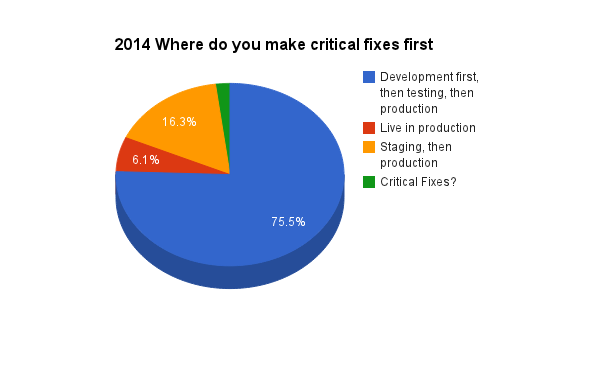
More people are developing using multiple environments.
This highlights the need for consistency between environments.
8% of respondents are still deploying critical changes on production first (or are unaware of what a critical fix is).
About Your Site Development?
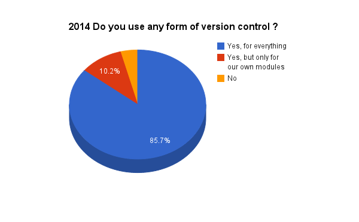
Good growth across in the board in regards to version control adoption.
96% of respondents utilize version control.
What is wrong with the other 4%?
About Your Site Development?

Remember the amount of time we spent bike-shedding the migration to git?
94% of respondents now use git.
Svn is the next closest with 2%.
About Your Site Development?
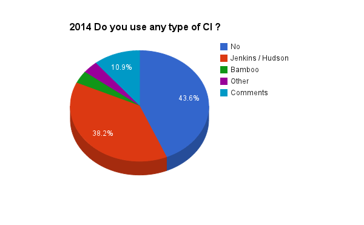
The use of Continuous Integration Platforms is increasing.
Jenkins is consistently outperforming other platforms in adoption.
About Your Site Development?
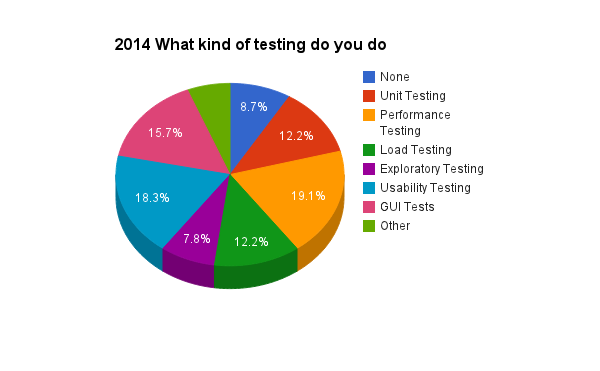
The types of tests we run are relatively consistent over time.
We are most interested in Performance, Usability and GUI Testing.
About Your Site Development?
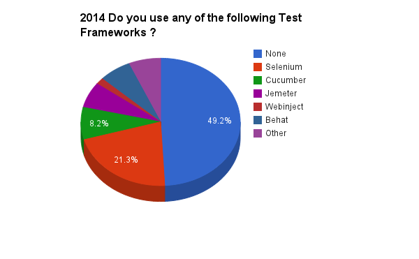
The use of testing frameworks is increasing.
Selenium leads the pack.
Cucumber increased by 2%.
Behat is the biggest mover at almost 7% (yay symphony).
About Your Site Development?
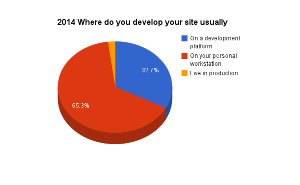
More developers are working locally.
Developers are moving away from working on production systems.
This highlights the need for consistency between environments.
About Your Site Development?
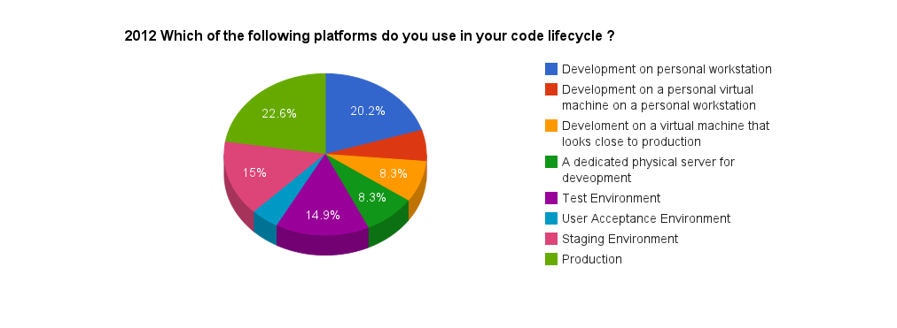
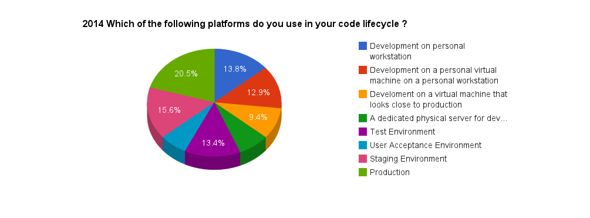
About Your Site Development?
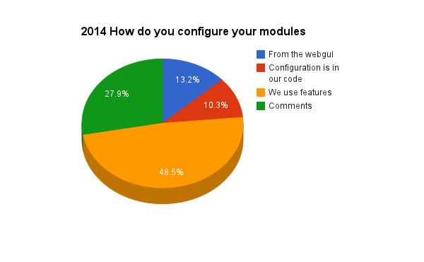
Adoption of Features to configure modules is up 18%.
Manual configuration changes from the GUI are down 27%.
About Your Site Development?
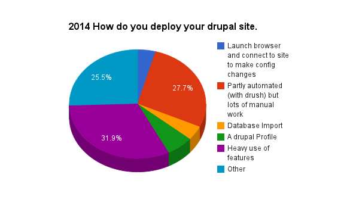
Site profile installations improved from less than 1% to 6%.
Database installations have decreased by 9%.
Heavy use of Features has increased by 9%.
What's Behind Drupal?
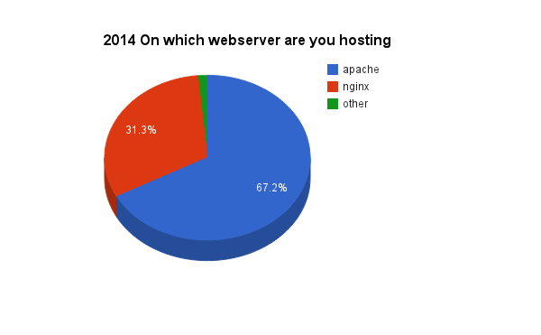
Safe to say Apache and Nginx dominate.
Nginx usage as a webserver has increased by 12%.
What's Behind Drupal?
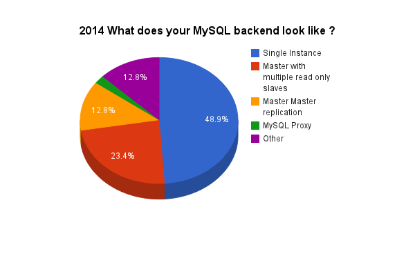
Data systems are increasing in complexity.
Single instances of mysql are down 28%.
A fair amount of this replication growth is a result of hosting providers that cater to Drupal.
What's Behind Drupal?
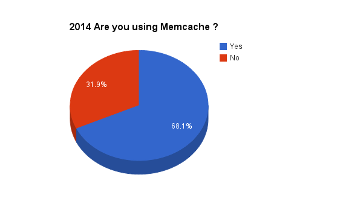
We've identified that performance is key to Drupal from a testing perspective. We can see similar focus when it comes to growth in caching.
What's Behind Drupal?
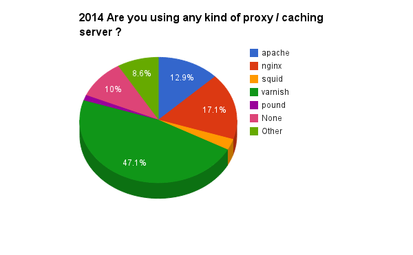
Varnish use has increased by 17%.
Relative percentage of people not using this layer of caching has decreased by 20%.
The use of HAProxy is increasing.
Apache keeps loosing market share.
What's Behind Drupal?
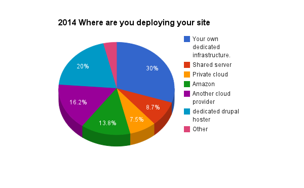
Internal dedicated infrastructure is down by 9%.
Shared server usage has fallen by 14%.
It's true ... we are migrating to the cloud.
The moment of Zen is past ... you promised us an iPad!
Thoughts?
Join groups.drupal.org/devops
Room: 10B - Blink Reaction | 3rd floor
Time slot: Thursday · 10:45-11:45
Evaluate this session! - Seriously! The DA needs this information.
austin2014.drupal.org/schedule
/